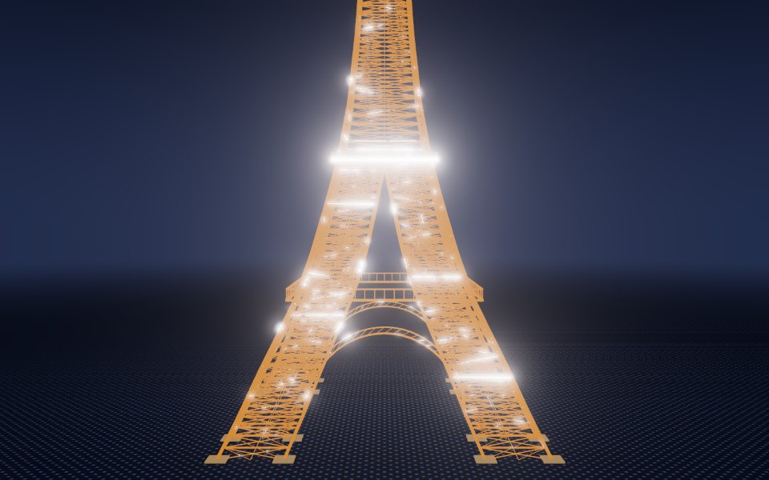
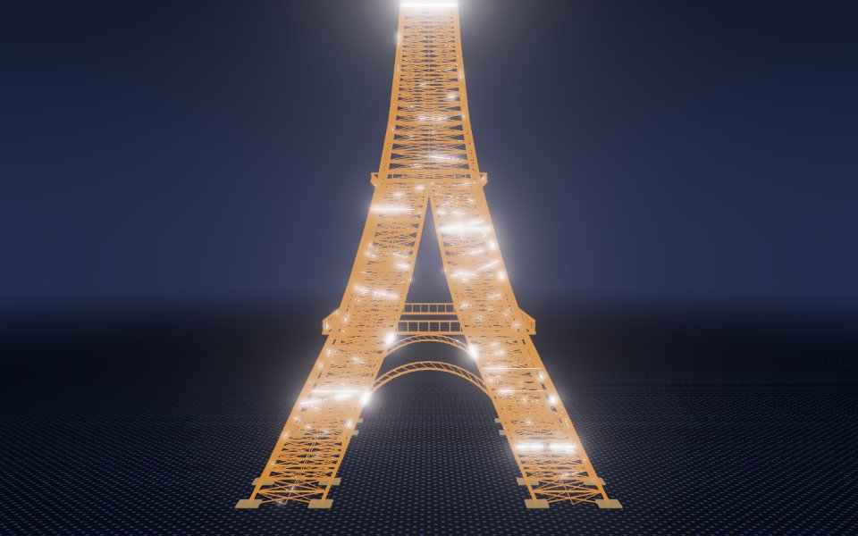
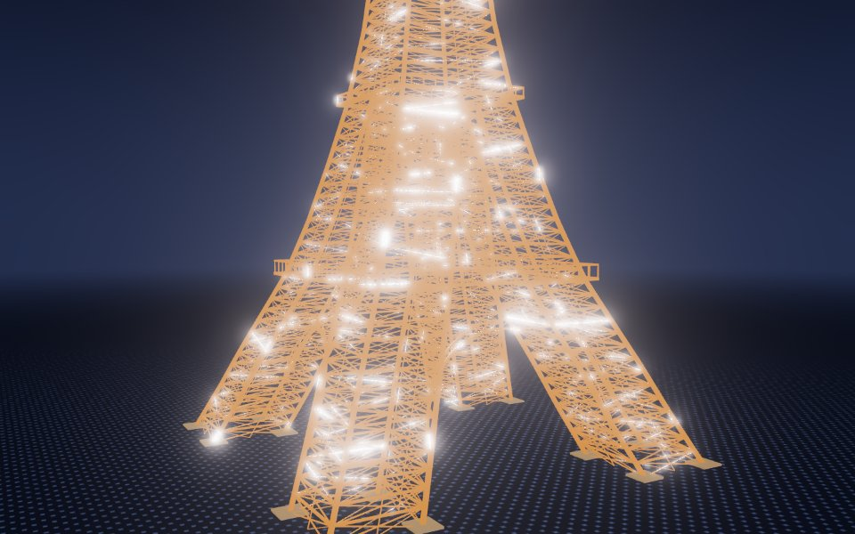
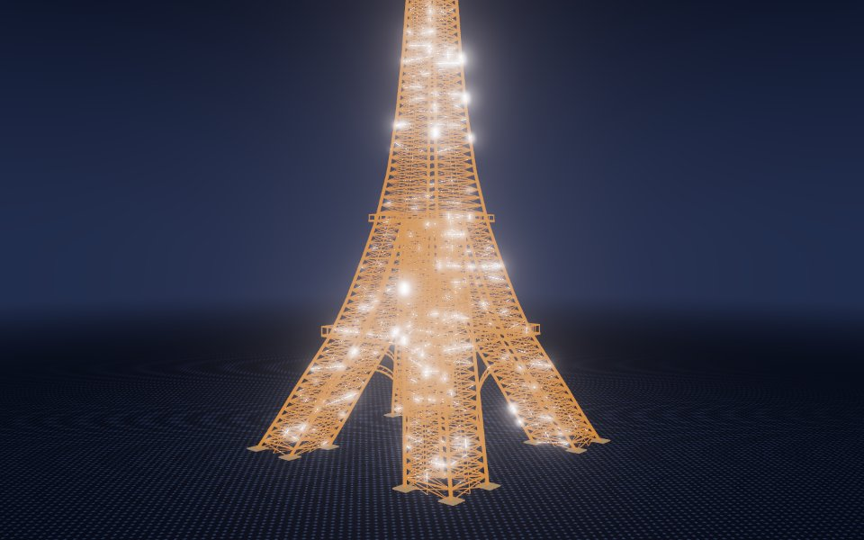
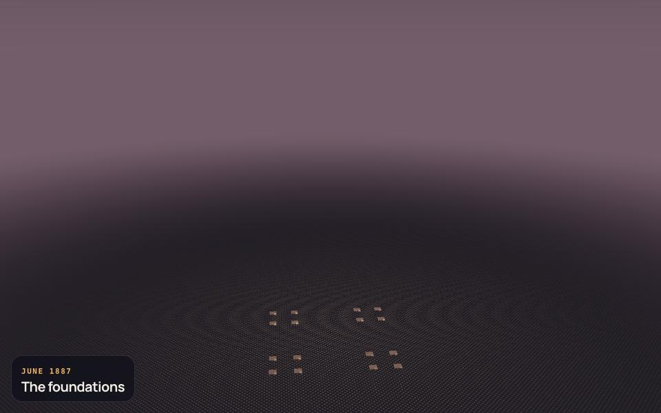
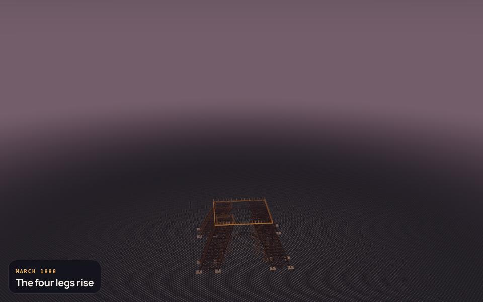
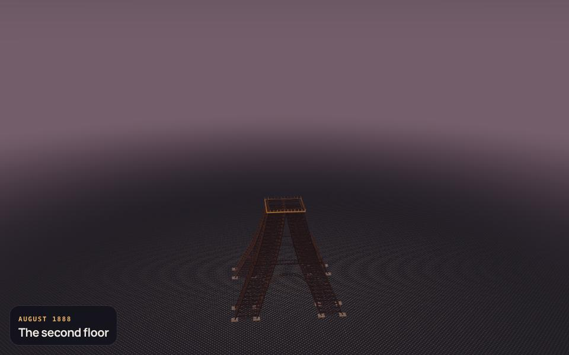
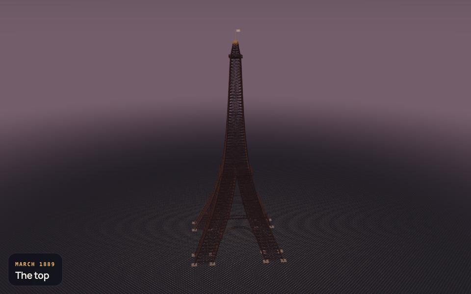
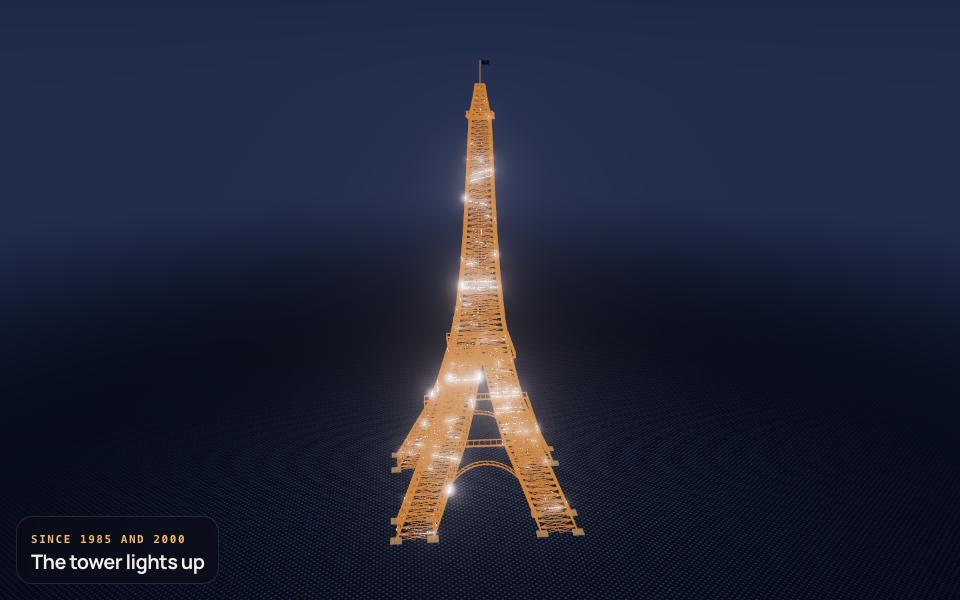

Eiffel Tower · comparison pass 1
Left: the reference photo. Right: the model from the same viewpoint. Write what differs in evidence.comparisons.
ref 0 · north-west, from the Trocadero esplanade · 315°, 2°


ref 1 · south-east, up the Champ-de-Mars lawns · 135°, 2°


ref 2 · east, from the Bir-Hakeim bridge over the Seine · 75°, 3°


ref 3 · north, along the fountains of the Trocadero gardens · 5°, 2°


The end of every phase

1887-01-26 · The foundations
1887-07-01 · The four legs rise
1888-04-01 · The second floor
1888-08-14 · The top
Since 1985 and 2000 · The tower lights up